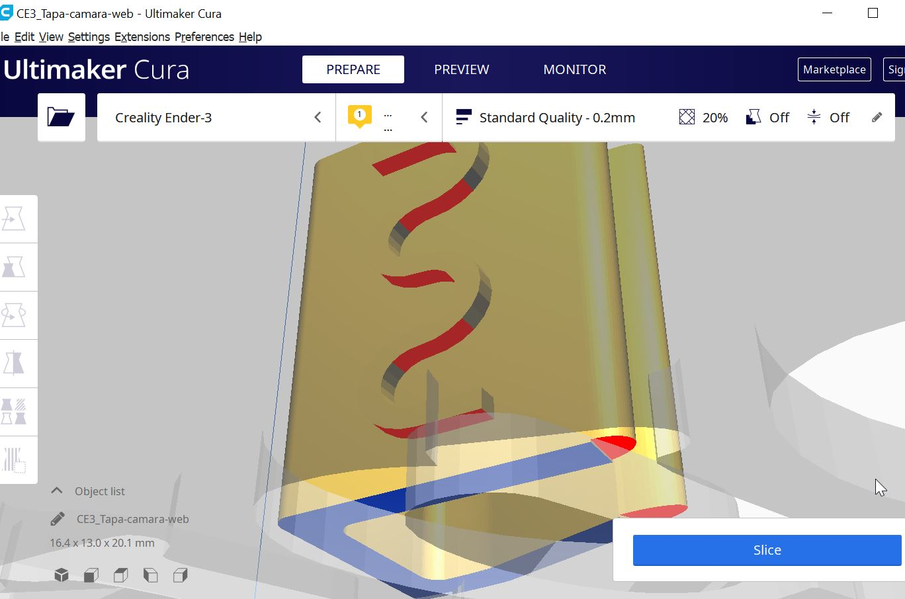
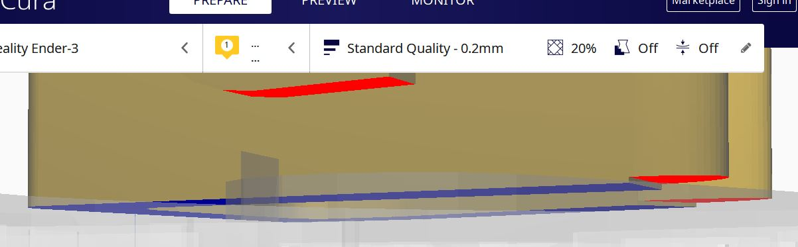
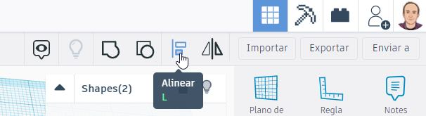
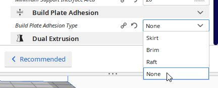
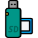
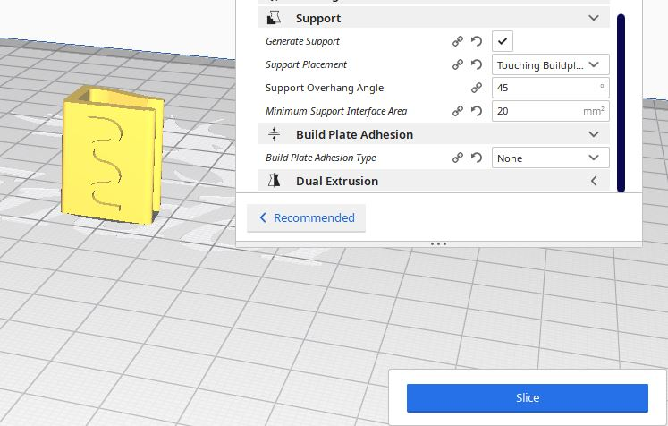
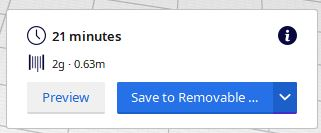
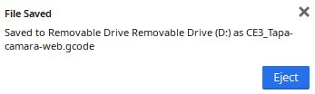

SLICE
¿Qué es?
La impresora 3D lee ficheros gcode que lo que contiene es información de cómo se tiene que mover el cabezal en cada capa o rebanada (Slice = rebanada)
Antes de dar a Slice
Tenemos que ver que no quede nada importante "en el aire", para ello nos ponemos en un punto de vista mirando de abajo a arriba y CURA nos destaca en rojo lo que queda "al aire" :

NO es relevante y esos pequeños trozos los puede hacer sin problema
La parte azul indica que está pegado a la base (importante para que la pieza no se nos despegue durante el proceso de impresión), pero vemos que las puntas redondeadas no, acercándonos vemos que no he sido preciso en el diseño (a lo mejor tú sí)

Esto pasa por no usar la herramienta Alinear en Tinkercad, seleccionando los dos objetos la U y los semicilindros :

Esto de las "partes en el aire" lo trataremos en el tema de SOPORTES.
Como es una pieza que no tendrá problemas de adhesión yo suelo quitar el Skirt Brime o Raft que sale por defecto.

Procedemos a Slice
Ponemos una tarjeta microSD en nuestro ordenador, seguramente necesitaremos un adaptador :

Icono de Flaticon
Procedemos a pulsar en el botón Slice :

Y nos dice luego cuanto va a tardar, pulsamos en grabar en la tarjeta (Removable)

Podemos pues a pulsar a Expulsar (Eject) pues ya ha grabado el fichero "CE3-Taca-camara-web.gcode"


IMPRESION BÁSICA 3D por Javier Quintana Peiró bajo licencia Creative Commons Reconocimiento-NoComercial-CompartirIgual 4.0 Internacional License.